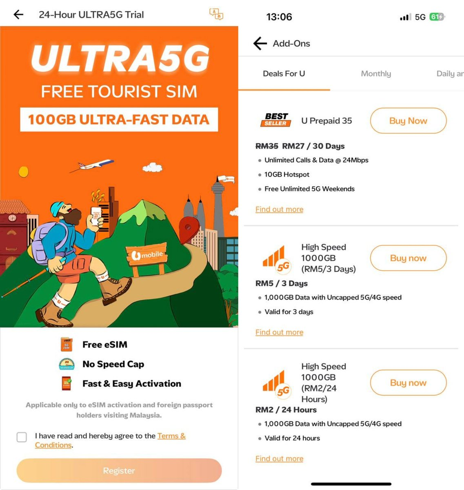
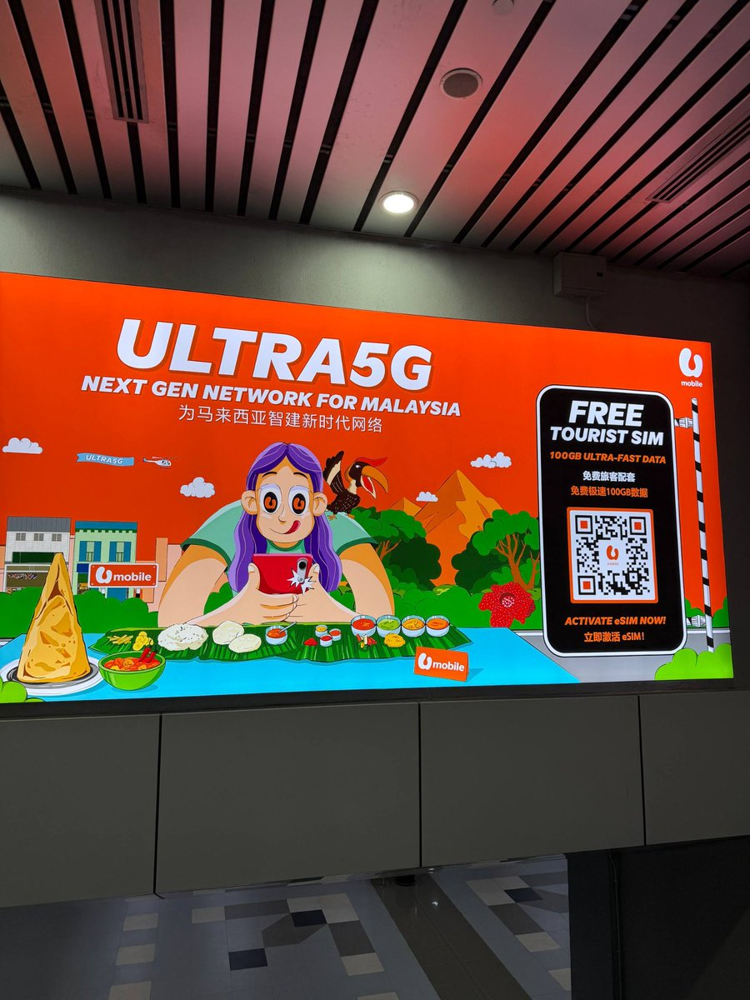
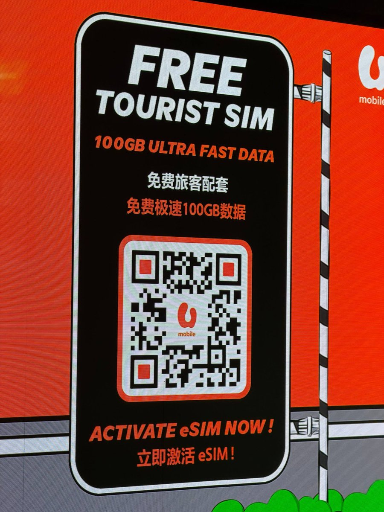

到大马旅游忘记提前买eSIM，于是在机场看到了Umobile的广告。连接WiFi扫码，输护照人脸识别完成注册，就领到了100GB不限速的免费eSIM了
之后仅需27令吉（约47元）就能买一个月无限量，还附带一个+60马来西亚号码，不过网速只有24Mbps。嫌速度不够可以订购加速包，前1TB流量不限速，按需订购
像之前的大阪世博会，povo（KDDI au）也出过24小时免费双不限的Osaka eSIM，由此可见eSIM技术在出境旅游的便利性。要是中国的运营商把整特供eSIM、EID两卡上限、反诈劫持等骚操作的精力，放在对接国家「过境免签」政策、与国际接轨，我想中国会越来越繁荣、更加开放
只能说，一对比起来，真是好的不学，处处都在设门槛。明明是一项好的技术，就像当年WiFi进入中国一样，非得技术限不住了再开门，真的很难看
之后仅需27令吉（约47元）就能买一个月无限量，还附带一个+60马来西亚号码，不过网速只有24Mbps。嫌速度不够可以订购加速包，前1TB流量不限速，按需订购
像之前的大阪世博会，povo（KDDI au）也出过24小时免费双不限的Osaka eSIM，由此可见eSIM技术在出境旅游的便利性。要是中国的运营商把整特供eSIM、EID两卡上限、反诈劫持等骚操作的精力，放在对接国家「过境免签」政策、与国际接轨，我想中国会越来越繁荣、更加开放
只能说，一对比起来，真是好的不学，处处都在设门槛。明明是一项好的技术，就像当年WiFi进入中国一样，非得技术限不住了再开门，真的很难看


